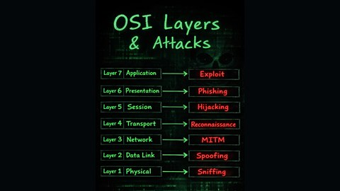
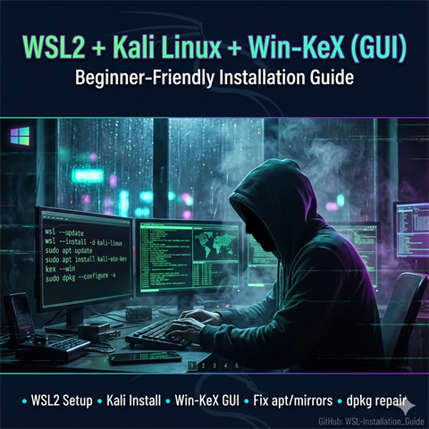
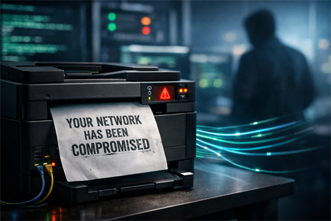
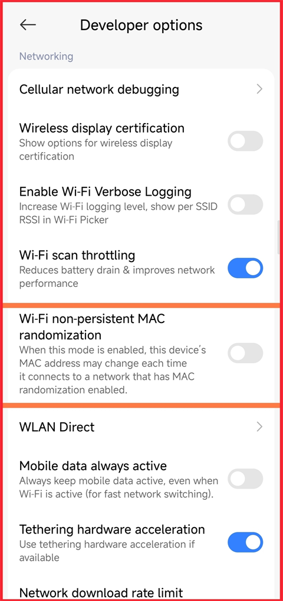

Why Attackers Like the Temp Folder and How You Can Protect Your PC
A practical breakdown of how malware stages files in Temp, why that folder is frequently abused, and five defensive habits that significantly reduce risk.
Read transmission →Threat stories, security awareness, and field notes from MultiHAT operations. Every post is a decoded transmission from the front lines of cybersecurity.
A practical breakdown of how malware stages files in Temp, why that folder is frequently abused, and five defensive habits that significantly reduce risk.
Read transmission →
A layer-by-layer map from physical to application attacks, built to make the OSI model more practical for students and defenders.
Read transmission →
A notebook-style guide with exact commands, recommended prompt answers, screenshots, and fixes. Built for beginners who want a clean WSL2 + Kali + Win-KeX setup on Windows.
Read transmission →A quick DevTools trick: open the Command Menu and capture a full-size screenshot in seconds. No extensions needed.
Read transmission →
Printers are often ignored, under-patched, and trusted by everything inside a network. This post breaks down how a printer became the quiet entry point for attackers.
Read transmission →AI-assisted speed is real, but wrong decisions create compounding complexity. A breakdown of why simple solutions matter more than fast ones.
Read transmission →Nation-state actors can correlate metadata and behavior. VPNs and proxies help, but real anonymity depends on identity separation and fewer actions.
Read transmission →
Blocking by MAC can be bypassed on modern phones. The safest fix is a password change plus tighter router settings.
Read transmission →Quantum computers threaten current RSA and ECC encryption. NIST's post-quantum standards exist today. Learn what organizations should do now.
Read transmission →